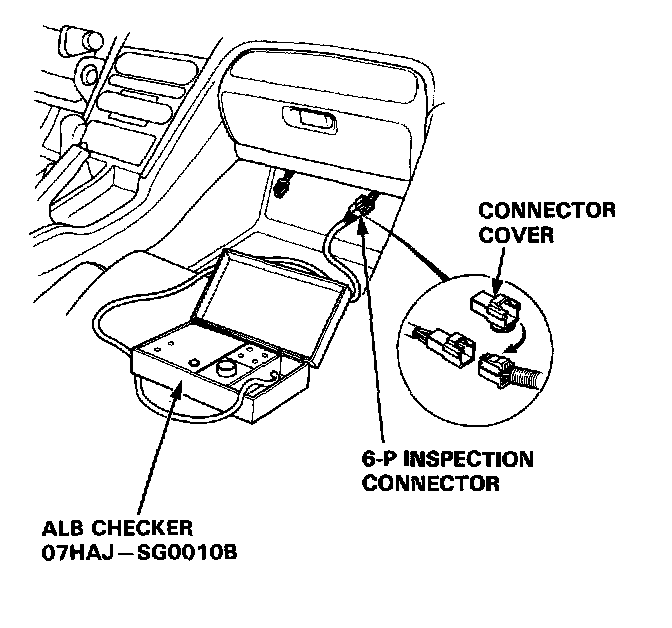
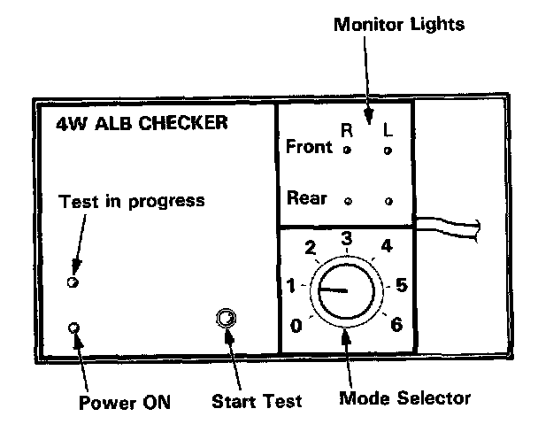
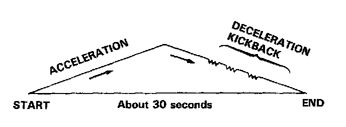

Function Checks
Function TestNOTE:
- The ALB checker is designed to confirm proper operation of the anti-lock brake system (ABS) by simulating each system function and operating condition. Before using the checker, confirm that the anti-lock brake system (ABS) indicator light is not indicating some other problem with the system. The light should go on when the ignition is first turned on and then go off and stay off one second after the engine is started.
- The checker should be used through modes, 1 - 5, to confirm proper operation of the system, in any one of the following situations:
a. After replacing any ABS component.
b. After replacing or bleeding the system fluid (0 mode not necessary).
c. After any body or suspension repair that may have affected the sensors or their wiring.
WARNING: Disconnect the ALB checker before driving the car. A collision can result from a reduction, or complete loss, of braking ability causing severe personal injury or death.

1. With the ignition switch off, disconnect the 6-P inspection connector from the connector cover located under the glove box and connect the 6-P inspection connector to the ALB checker.
NOTE: Place the vehicle on level ground with the wheels blocked, put the transmission in neutral for manual transmission models, and in P for automatic transmission models.
2. Start the engine and release the parking brake.

3. Operate the ALB checker as follows:
(1) Turn the Mode Selector switch to "1".
(2) Push the Start Test switch:
- The test in progress light should come ON.
- In one or two more seconds, all four monitor lights should come on (If not the checker is faulty).
- The ABS indicator light should not come ON (If it comes on the checker harness to the 6-P connector connection is faulty).
NOTE: When test in progress indicator light ON, don't turn the Mode Selector switch.
4. Turn the Mode Selector switch further to "2".
5. Depress the brake pedal firmly and push the Start Test switch.
- The ABS indicator light should not go on while the Test in Progress light is ON. There should be kickback on the brake pedal. If not as described, go to ABS Indicator Light troubleshooting.
Description of On-Board Diagnostics

NOTE: The operation sequence simulated by Modes 2, 3, 4 and 5.
6. Turn the Mode Selector switch to 3, 4 and 5. Perform step 5 for each of the test mode positions.
Mode 1:
- Sends the simulated driving signal 0 mph (0 km/h) to 113 mph (180 km/h) to 0 mph (0 km/h) of each wheel to the ABS control unit. There should be NO kickback.
Mode 2:
- Sends the driving signal of each wheel, then sends the lock signal of the rear left wheel to the ABS control unit. There should be kickback.
Mode 3:
- Sends the driving signal of each wheel, then sends the lock signal of the rear right wheel to the ABS control unit. There should be kickback.
Mode 4:
- Sends the driving signal of each wheel, then sends the lock signal of the front left wheel to the ABS control unit. There should be kickback.
Mode 5:
- Sends the driving signal of each wheel, then sends the lock signal of the front right wheel to the ABS control unit. There should be kickback.
Mode 6..
- Not used on this model.
NOTE: If little or no kickback is felt from the brake pedal in modes 2-5, repeat the function test of modes 1-5 several times before beginning to troubleshoot other parts of the system.
Inspection points:
1. The ABS indicator light goes ON in mode 1:
- Check the wiring. If it is in good condition, the ABS control unit is faulty.
- If ABS indicator light goes on 120 seconds later but the pump motor stops, refer to DTC 1.
DTC 1
2. There is no kickback in modes 2 through 5:
- Faulty pressure switch (remains ON)
- Shorted wires
- Faulty or disconnected pump motor connector
- Faulty pump motor relay
3. Weak kickback in modes 2 through 5:
- Bleed high pressure circuits.
4. Pump motor stops in mode 1 but it does not stop and there is no kickback in modes 2 through 5:
- Brake fluid leakage
- Bleed power unit
- Clogged power unit outlet
- Clogged or deteriorated power unit hose